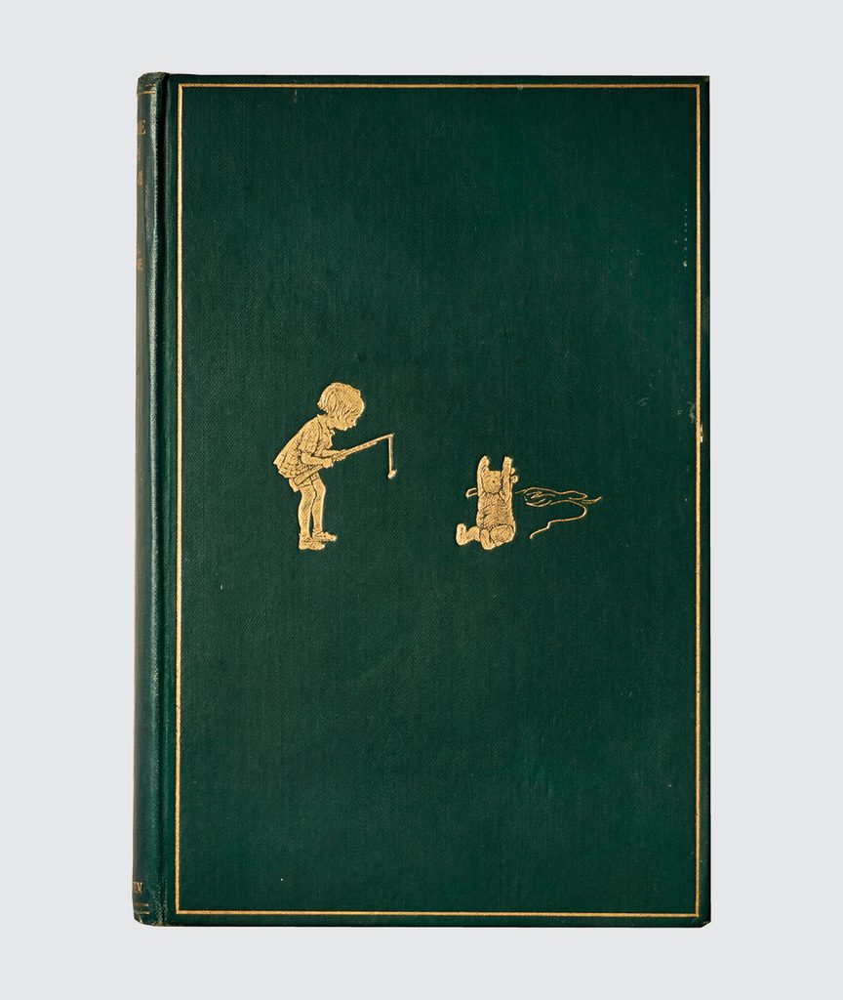
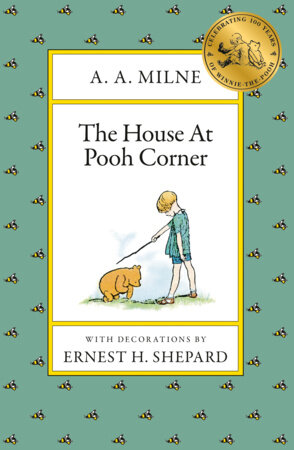
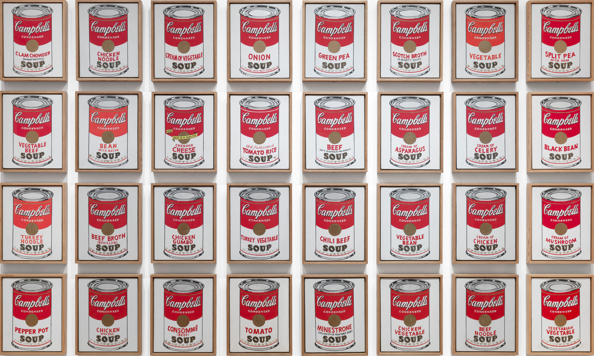
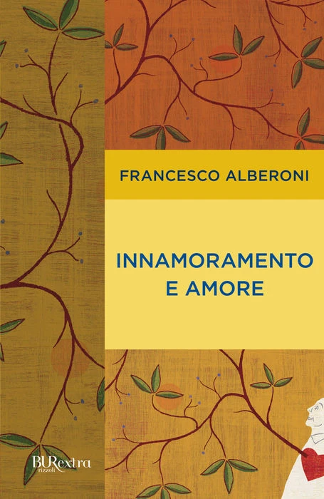
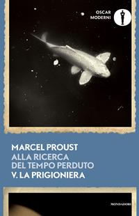
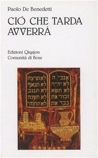

37:47 · 8 OPERE
Winnie-the-Pooh ed il viaggio intorno al cuore.
Il filo del discorso
Le avventure di Winnie-the-Pooh diventano un viaggio nell’amicizia e nel riconoscimento della persona. Il relatore accosta dialoghi dei personaggi, immagini e massime per parlare di ispirazione, fiducia, abbraccio, distanza e memoria: la semplicità del linguaggio infantile gli permette di formulare domande che riguardano anche gli adulti. La poesia che arriva a chi sa attenderla apre una riflessione sulla disponibilità a incontrare il senso; Piglet che cerca la zampa di Pooh rappresenta una presenza che rassicura senza spiegazioni. Le impronte nel bosco suggeriscono il rischio di girare attorno al proprio passato, mentre l’attesa della colazione e delle avventure mostra la ricchezza del quotidiano. Il discorso si allarga all’amore per qualcuno in quanto persona, contrapposto alla ricerca di un proprio doppio, alla ripetizione delle merci e alla sostituzione di sé con il denaro. In questo percorso compaiono Socrate, Warhol, una definizione sociologica dell’innamoramento, Freud e Proust. Il finale lega la pluralità delle letture di Paolo De Benedetti alla promessa di non dimenticare l’amico. La scheda distingue però le interpretazioni del relatore dai testi attestati: vari passi provengono dal secondo libro di Milne del 1928, alcune massime restano prive di fonte precisa e la promessa conclusiva è pronunciata da Christopher Robin. Ne emerge una lettura personale del valore dei legami, accompagnata dai riscontri necessari a non attribuire indistintamente a Milne ogni frase circolante con i suoi personaggi.
I libri nel discorso

Winnie-the-Pooh
Copertina: Fotografia del piatto anteriore dell’esemplare della prima edizione 1926 conservato nella Stuart and Mimi Rose Collection, Folger Shakespeare Library; illustrazioni di Ernest H. Shepard.
Fotografia autentica della legatura verde con cornice e figure dorate di Christopher Robin e Pooh. È il piatto anteriore del libro conservato dalla Folger, non la sovraccoperta illustrata, benché la scheda descriva anche la presenza della sovraccoperta nell’esemplare. Il titolo non è visibile sul piatto: l’identificazione deriva dalla scheda della biblioteca. Non è certificato come il volume mostrato nel video.
Titolo e autore espliciti; il relatore ricorda poi il 1926.
Passaggio 0:13 ↗ · Fonti e libro ↗
Le avventure di Pinocchio. Storia di un burattino
Copertina: Gangemi · illustrato da Franco Staino, 2009
Immagine autentica dell’opera, controllata visivamente; l’edizione di riferimento non è attribuita al filmato.
Pinocchio esplicito nel confronto fra classici per bambini.
Passaggio 1:43 ↗ · Fonti e libro ↗
The House at Pooh Corner (La casa all’angolo di Pooh)
Copertina: Puffin Books, edizione in brossura del 1 agosto 1992, 192 pagine, illustrazioni di Ernest H. Shepard; opera originaria del 1928.
Copertina editoriale autentica verde con api, titolo inglese e Christopher Robin accanto a Pooh. Il file corrente reca un bollino del centenario del 1926: è la grafica oggi associata dall’editore all’ISBN Puffin della edizione 1992, non la prova che quel bollino esistesse nel 1992 o nel filmato. È stata usata l’immagine cover pulita, sostituendo quella sociale con larghi margini.
The House at Pooh Corner e incipit espliciti; altri dialoghi riscontrati nello stesso libro.
Passaggio 34:50 ↗ · Fonti e libro ↗
Campbell’s Soup Cans
Identificazione probabile
Riproduzione della serie Campbell’s Soup Cans: Serie del 1962: acrilico e smalto metallico su tela, 32 pannelli di 50,8 × 40,6 cm ciascuno; MoMA, inventario 476.1996.1–32.
Riproduzione museale autentica dei 32 dipinti disposti su quattro file di otto, con barattoli rossi e bianchi e gusti differenti. È un’immagine dell’opera, non una copertina di libro. Crediti dichiarati dal MoMA: Andy Warhol Foundation / ARS, NY / TM Licensed by Campbell’s Soup Co. Il riferimento alla serie è probabile: Warhol realizzò anche altre opere con questi barattoli.
Warhol e Campbell espliciti; identificazione della precisa serie 1962 probabile.
Passaggio 24:22 ↗ · Fonti e libro ↗
Innamoramento e amore
Identificazione probabile
Copertina: Immagine della edizione digitale aggiornata BUR, 4 dicembre 2012; catalogo editoriale: 189 pagine. Prima edizione Garzanti, 1979.
Copertina digitale autentica BUR extra, gialla e arancio con rami e piccola figura femminile. È associata dall’editore all’ebook 2012; non è la copertina della prima Garzanti né un libro riconosciuto visivamente nel video. La bibliografia propone il titolo come probabile, senza trasformare la polemica verso un sociologo anonimo in una sua citazione esplicita.
Definizione del movimento collettivo a due, senza nome e titolo: identificazione probabile riscontrata nella presentazione dell’autore.
Passaggio 27:13 ↗ · Fonti e libro ↗
La prigioniera (La Prisonnière)
Identificazione probabile
Copertina: Mondadori, Oscar moderni, 28 ottobre 2025, 464 pagine, quinto volume di Alla ricerca del tempo perduto. Opera originaria pubblicata postuma nel 1923.
Copertina autentica Oscar moderni, blu con fotografia di un pesce chiaro su fondo scuro e titolo del quinto volume. Il file è piccolo, 200 × 310 pixel, dichiarato senza alta risoluzione inventata. È una edizione di riferimento 2025, non quella eventualmente posseduta dal relatore; la parafrasi italiana non viene assegnata a un traduttore non identificato.
Proust e gli occhi nuovi espliciti; titolo probabile riscontrato nel testo francese.
Passaggio 34:02 ↗ · Fonti e libro ↗
Antigone
Identificazione probabile
Copertina: Einaudi · Collezione di teatro · edizione di riferimento
Immagine associata all’ISBN di riferimento e controllata visivamente; edizione e traduzione non identificate come quelle citate o lette nel video.
Sofocle e polla ta deina: collegamento probabile al coro di Antigone, titolo non pronunciato.
Passaggio 35:41 ↗ · Fonti e libro ↗
Ciò che tarda avverrà
Identificazione probabile
Copertina: Qiqajon, Magnano, 1992, Spiritualità ebraica, 144 pagine; il capitolo iniziale è dedicato al settantunesimo senso.
Immagine autentica Qiqajon del titolo identificato come probabile. Il riferimento non è sostituito con il diverso numero di Humanitas del 2006 intitolato Il settantunesimo senso. La presenza del concetto in più scritti non consente di certificare che il relatore stesse citando questa specifica edizione.
Paolo De Benedetti e settantunesimo senso espliciti; titolo probabile dal capitolo iniziale documentato.
Passaggio 36:07 ↗ · Fonti e libro ↗Minutaggi ricavati da testi automatici, da riascoltare. Le identificazioni probabili sono segnalate accanto ai libri.